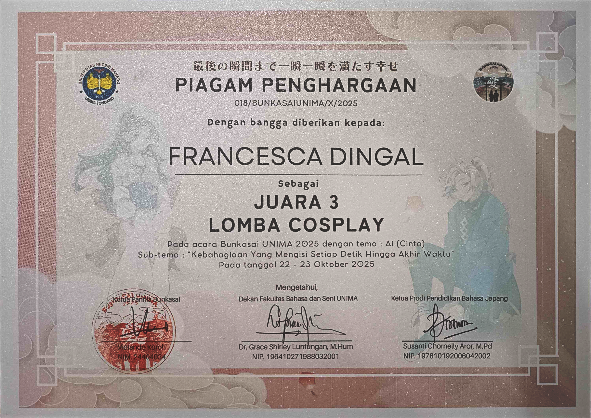
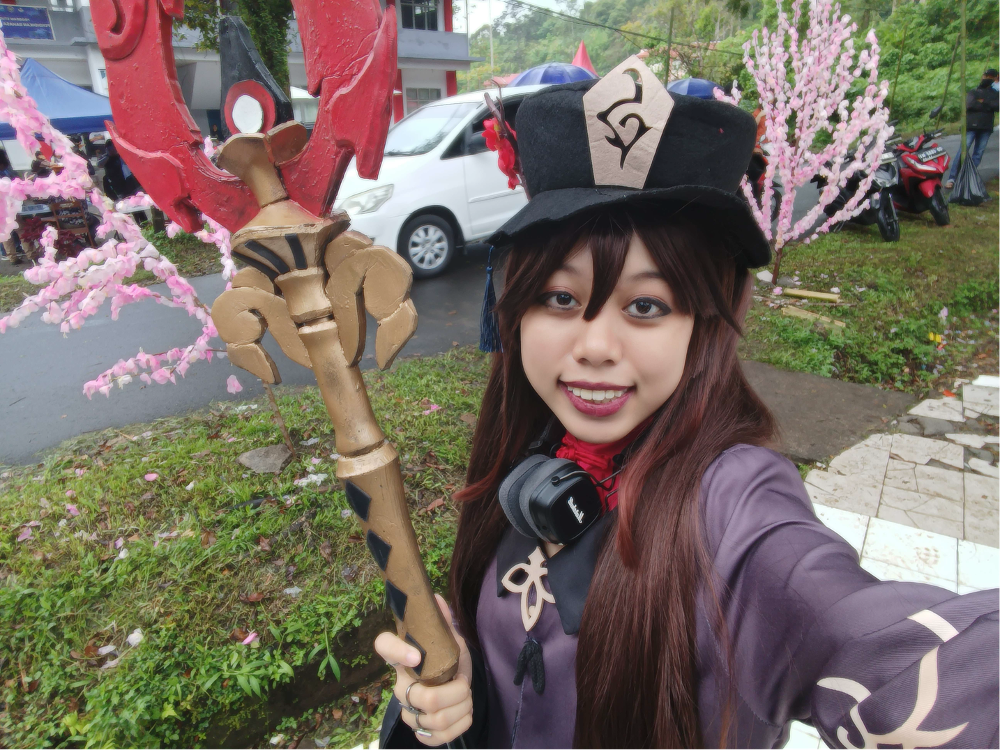
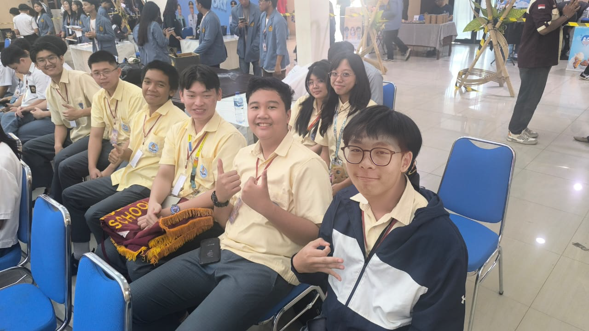
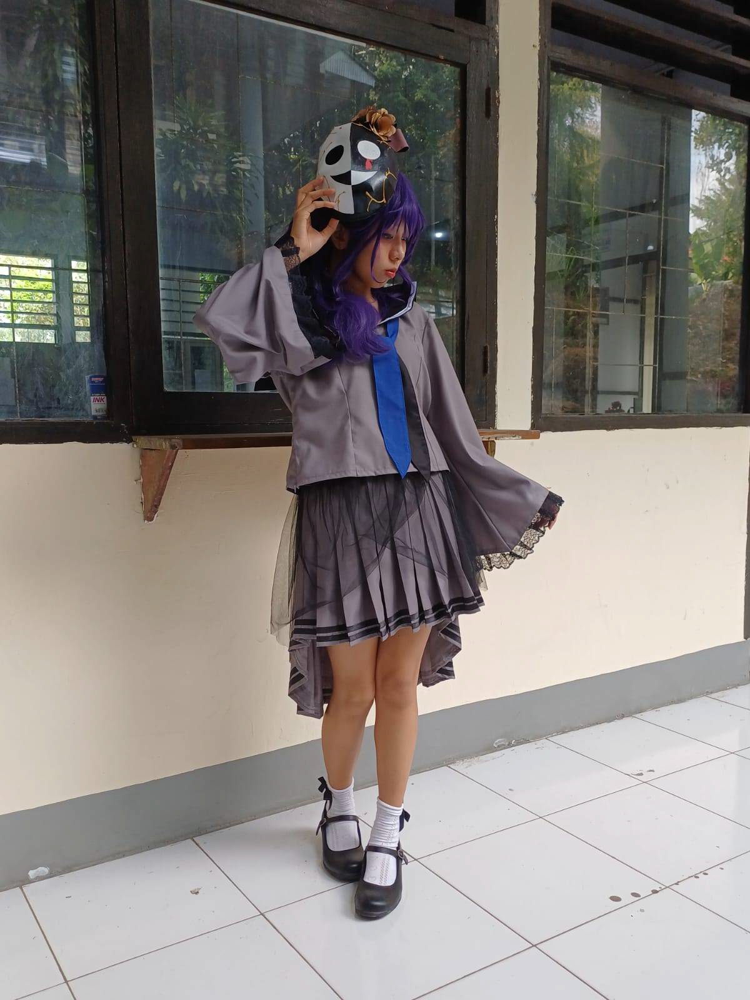
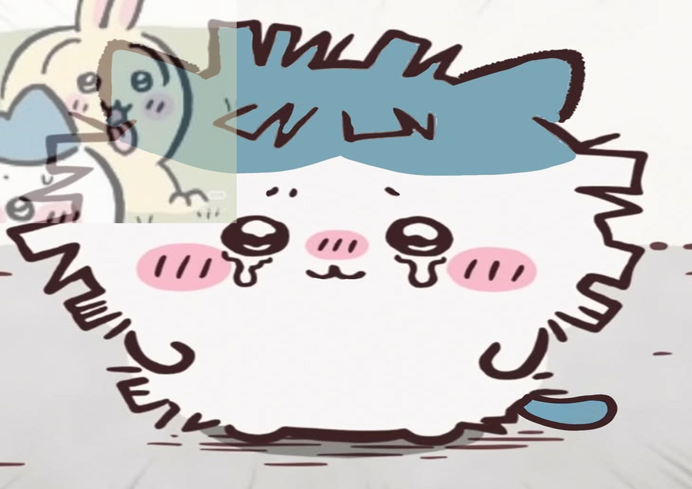

Extracurricular Certificates

Miaw meow meow Miaw meow meow
Miaw meow meow
Miaw meow meow
Hi there, I am Francesca Dingal, a high school student from Manado Independent School, Indonesia, graduating with the class of 2028. Because of my family's background, I've always been moving from place to place and have since adapted to living in different countries. This is where my love for English as a language was born, as I slowly grew an appreciation for how a single language can also be so universal. To me, language is not just a way of speaking, and English is way more than just a subject. As someone who constantly faced difficulty adjusting to new places — and thus, new languages — English was my one constant. It was how I expressed myself, and it was what allowed me to connect to others.
Through school activities such as speech competitions, academic presentations, and extracurricular activities that had me leading on stage, I've garnered various lessons that have taught me the importance of confidence, self expression, and communication. Other than my academic activities, I draw, write, cosplay, and craft all as means to bring my inner world to life. Whether it's by drawing or writing character concepts, cosplaying fictional characters, or transforming what may have been trash to others into something valuable for myself, I'm always looking for ways to express myself thoroughly.
As an aspiring teacher, I'm determined to use these skills, experiences, and my education to help students find their voices and confidence through language, just as I have found mine. I strive to teach more than just English as a subject, and instead teach English as a bridge to greater things. With that being said, welcome to my portfolio!

October 23, 2025 | In Bunkusai Unima as Hu Tao from Genshin Impact.
October 21, 2026 | In Surocup, representing MIS as the team "Spartans".
October 27, 2026 | In Bunkusai Unima as Mafuyu Asahina from Project Sekai: Colorful Stage.
Miaw meow meow
Miaw meow meow
Miaw meow meow